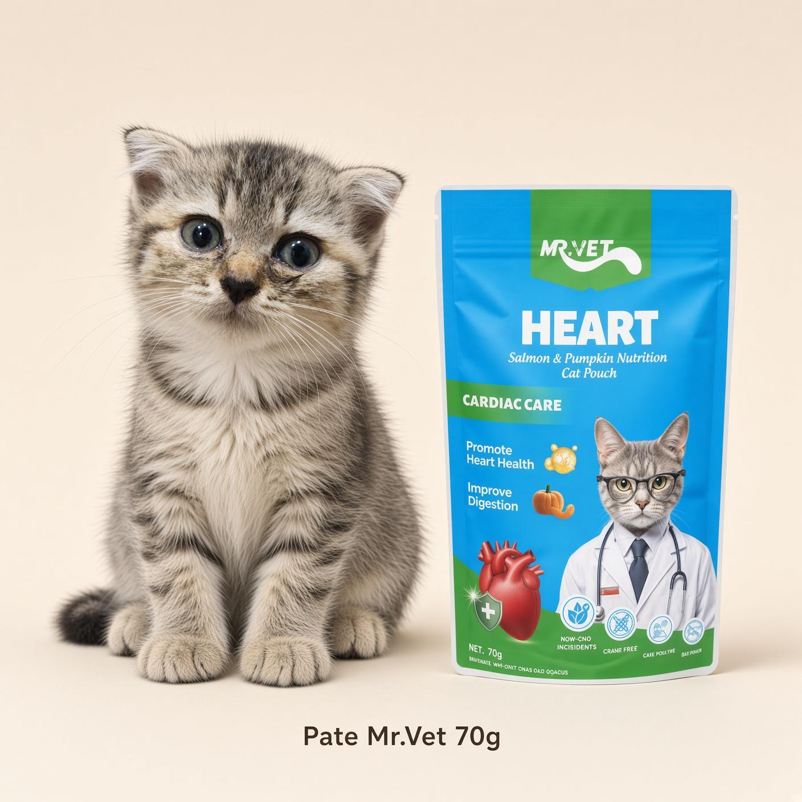
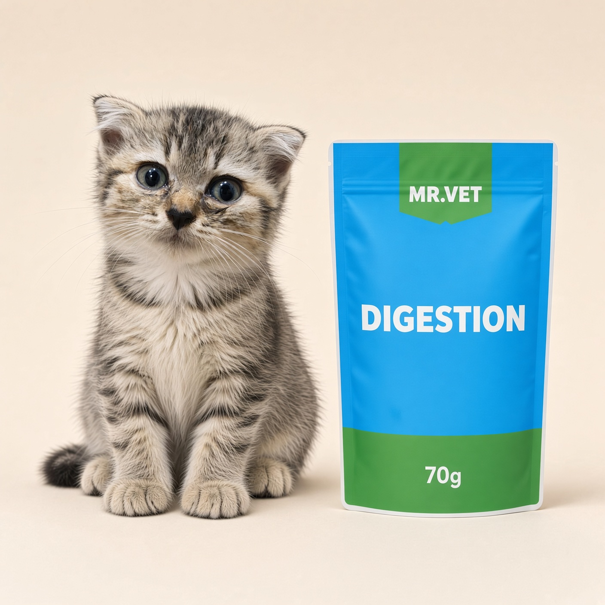
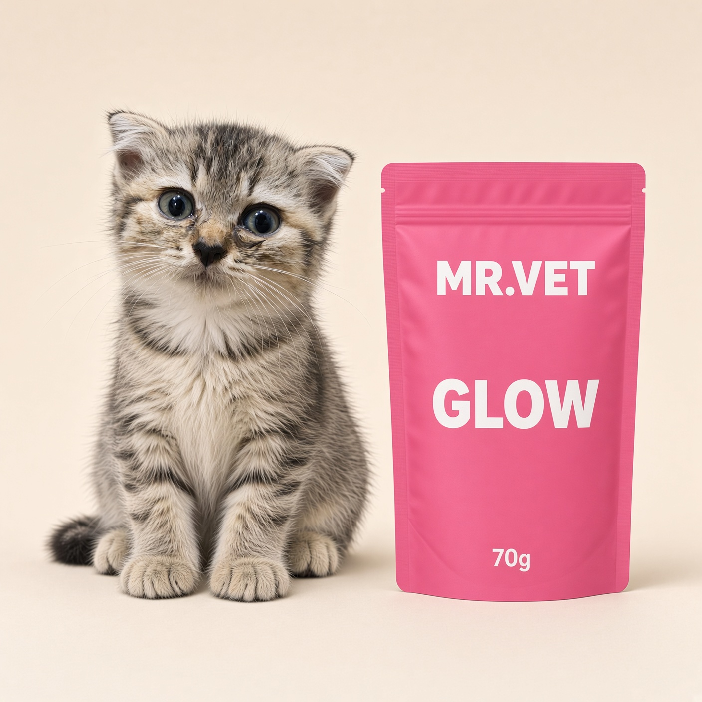
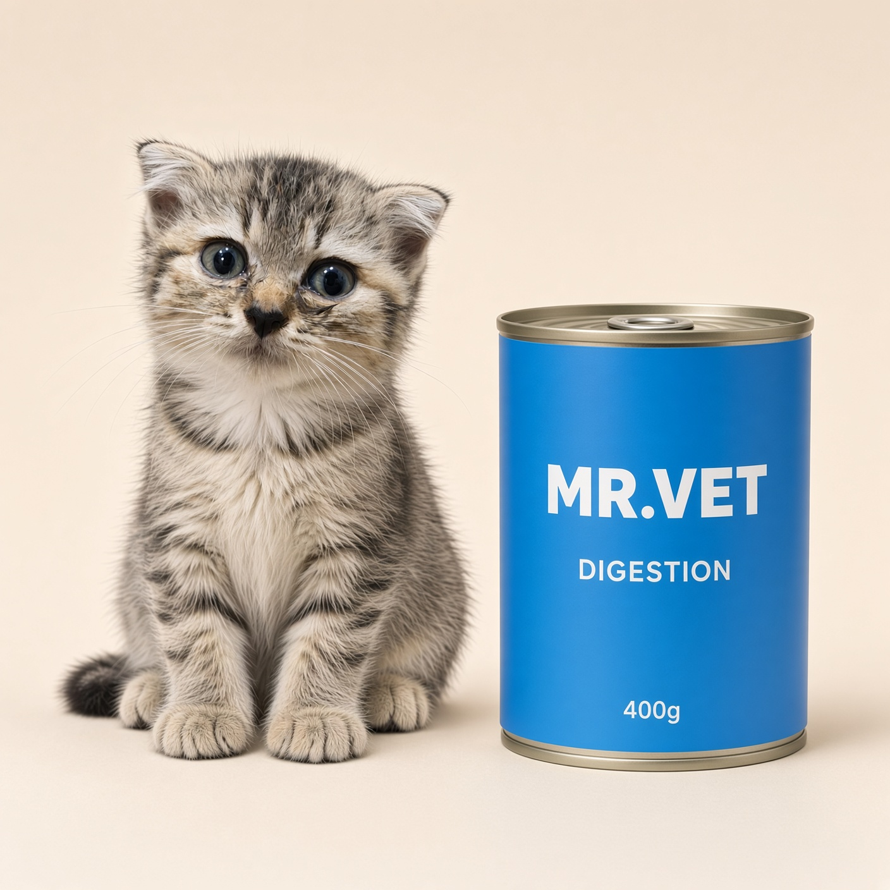
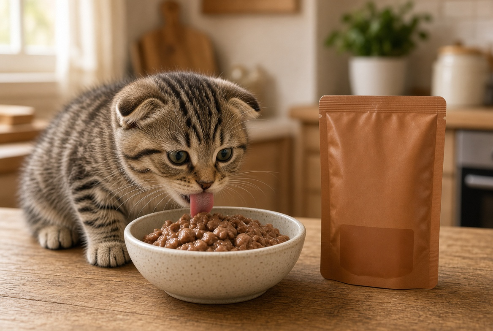

Shop nhà nuôi 3 bé. Bông 2–3 tháng. Link Shopee có hoa hồng. Ảnh minh họa, bao thật xem trang sản phẩm. Không phải cửa hàng chính hãng.
Mở gói là có tiếng chân

Tao xé gói 70g. Bông đang trong thùng, 3 giây sau đã ngồi chờ. Hai bé kia chậm hơn một nhịp. Gói này là Heart, cá hồi và bí đỏ. Một gói hơn một bữa, ăn không hết thì đừy kín, để tủ lạnh.
Meme đăng TikTok: “Tao mới nghĩ tới pate. Bông đã ngồi đó.”
Digestion khi bữa trước hơi lỏng

Đi ngoài hơi mềm, tao không đổi hạt ngay. Để bữa pate Digestion, cắt hạt buổi đó. Hơn một ngày, có máu, bỏ ăn: đi khám. Pate không phải thuốc.
Glow, bé đòi vị hồng

Glow là gà và lòng đỏ trứng, nhà dùng cho da lông. Bông không biết tên vị. Bông chỉ biết mở gói. Đừng mua 5 vị một lúc nếu bé mới về. Lấy 1 gói, ăn hết rồi đổi.
Lon khi nhà 3 bé

Ba bé mà xé 3 gói mỗi bữa thì tóm. Lon 400g mở ra, chia 3 bát, phần còn để tủ lạnh ăn trong ngày. Meme: “Lon mở. Họp đồng hòa bình hết hiệu lực.”

Bát này chưa phải bát nhà tao đong. Đúng mức vẫn là bảng trong bài 2–3 tháng ăn bao nhiêu gam. Có hạt thì trừ pate.